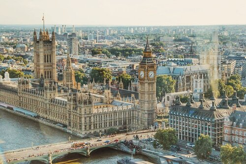

Greek and Roman Classical
Prominently used in ancient Greece and Rome. It adheres to the idea of building structures with a set template. The order of Greek columns: Doric, Ionic, and Corinthian.

Gothic
This style began in France and was adapted throughout Europe. It follows stonework/masonry with three main features: sharply pointed arches, ribbed and vaulted columns, and flying buttresses.

Baroque
This style originated in Italy and is said to be a more emotional and dramatic style aimed at appealing to the senses. It includes curved forms like ovals, concave and convex forms (suggesting motion), along with distortion (which built certain things to stand out from others).

Neoclassical
A revival of Classical architecture, being similar to the Greek and Roman forms. Its style involves clean, elegant lines, an uncluttered appearance, free-standing columns and massive buildings.

Victorian
A style that came from the buildings constructed during Queen Victoria’s reign. It was a revival of several architectural styles like Gothic, Romanesque, and Tudor. It was applied to residential housing during the industrial revolution. A feature called the “dollhouse” look includes having elaborate trims, vivid colors and asymmetrical designs.
